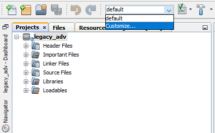
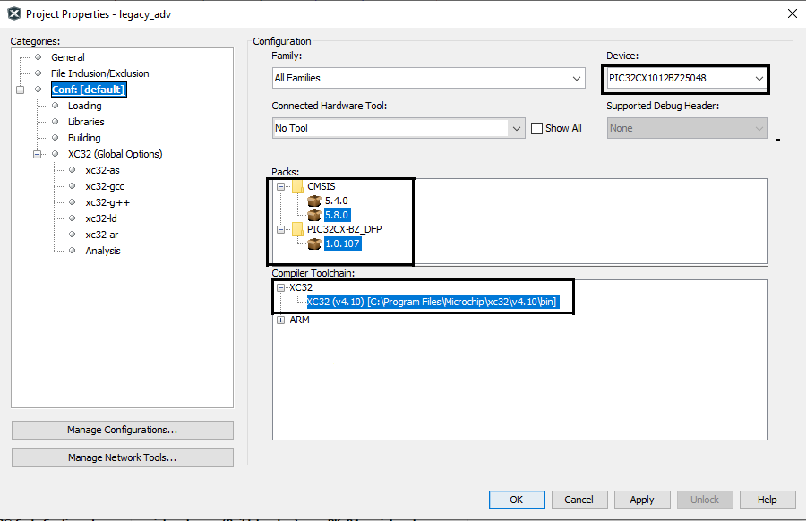
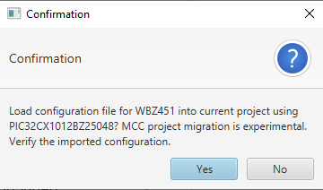
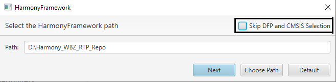
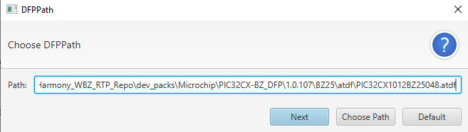
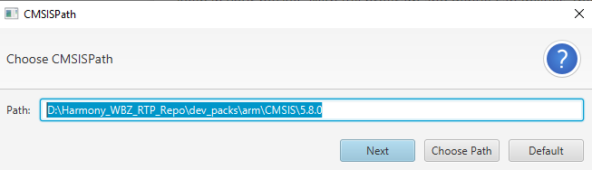
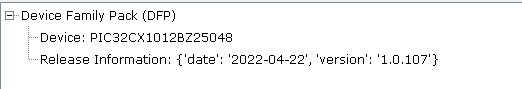
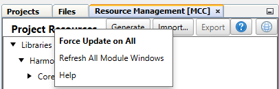

16 Porting Guide for WBZ451 to PIC32CX1012BZ25048
Introduction
This document provides the steps that helps the user to port an existing project created for WBZ451 to PIC32CX101BZ25048.
Steps for porting an MCC project
- Open an existing WBZ451 MCC project in MPLABx.
- Open Project properties by selecting customize option available in the drop
down options.
- Change the Device name to PIC32CX1012BZ25048 and select the respective packs
and compiler versions.
- Open the MCC by pressing the MCC button available at top in MPLABx and
Accept('Yes') the project migration confirmation.
- While opening the MCC content manager, Untick the "Skip DFP and CMSIS
Selection" option in Harmony Framework Path selection window to Manually
select the DFP path.
- Choose the dfp path(by Pressing 'Choose Path') to **Harmony Framework**(H3
framework stored in the
disk)**\dev_packs\Microchip\PIC32CX-BZ_DFP\1.0.107\BZ25\atdf\PIC32CX1012BZ25048.atdf**
and Press 'Next'.Note: The DFP path selection will allow to select the folder path, In that case Manually choose the path till "dev_packs\Microchip\PIC32CX-BZ_DFP\1.0.107\BZ25\atdf" and Manully include "\PIC32CX1012BZ25048.atdf" in the DFP path selection window.
- Choose the default selected CMSIS path and press 'Next'.
- Once MCC is opened the DFP will be available for the selected device, can be
seen by clicking on the DFP from project graph.
Note: The DFP will be updated according to the device selected. If MCC project graph window is not visible or the selected DFP doesn't match with the device selection, In that case Choose the correct DFP path(refer step 6).
- Save MCC configuration and enable **Force update on All** option(by right
clicking onto the Project Resources Tab). Press Generate.
- Merge all the code differences shown in the merge window except Application files.
- Build and Flash the Project onto the device.